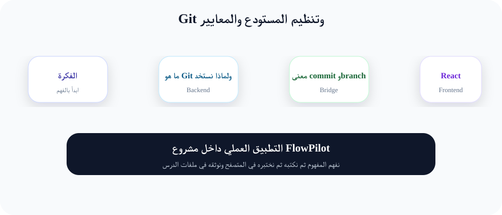
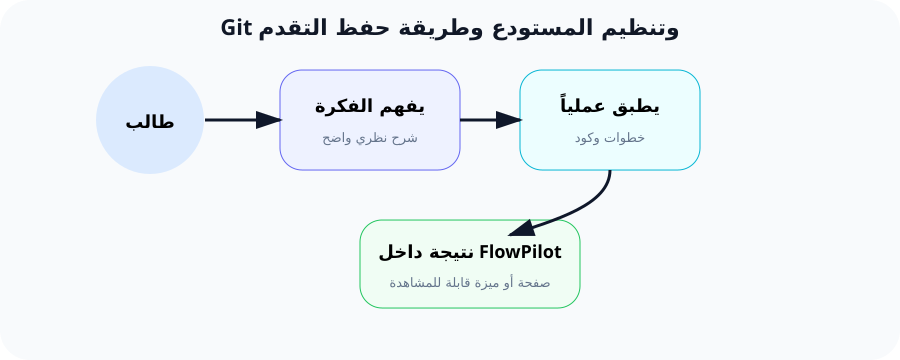

Git: آلة الزمن لحفظ تقدم مشروع FlowPilot
"المبرمج المحترف لا يخاف من التجربة، لأنه يعلم أنه يستطيع العودة بالزمن في ثوانٍ."
لماذا هذا الدرس مهم جداً؟
هل سبق لك أن لعبت لعبة فيديو، ووصلت لنقطة صعبة، ثم خسرت واضطررت للبدء من البداية لأنك نسيت أن تحفظ اللعبة؟ هذا الشعور بالإحباط هو ما يشعر به المبرمجون الذين لا يستخدمون Git.
Git هو نظام "التحكم في الإصدارات" (Version Control System). هذه عبارة كبيرة، لكن معناها بسيط: Git يسجل "لقطات" (Snapshots) لمشروعك في كل مرة تطلب منه ذلك. يمكنك العودة لأي لقطة في أي وقت، ومقارنة التغييرات، وحتى تجربة أفكار جديدة دون خوف.
في هذا الدرس، سنقوم بحفظ كل العمل الذي أنجزناه في الدروس الثلاثة السابقة في أول Commit رسمي لـ FlowPilot. من الآن فصاعداً، كل درس سنضيف commit جديد يوثق تقدمنا.
ما هو Git؟ شرح كل مفهوم بالتفصيل
1. Repository (المستودع)
المستودع هو مجلد خاص (مخفي) اسمه .git ينشئه Git داخل مشروعك. هذا المجلد يحتوي على تاريخ المشروع بالكامل: كل commit، كل فرع، كل تغيير. المستودع هو "ذاكرة" مشروعك.
تخيل أن لديك آلة تصوير. المستودع هو بطاقة الذاكرة (Memory Card) في الكاميرا. كلما ضغطت زر التصوير (Commit)، تحفظ الصورة في البطاقة.
2. Commit (الحفظ)
Commit هو "لقطة" (Snapshot) لمشروعك في لحظة زمنية معينة. كل commit له:
- Hash: معرف فريد (مثل
a1b2c3d4) يميز هذا commit عن غيره. - Message: رسالة تصف ما قمت به (مثل "إضافة صفحة الترحيب").
- Author: اسم الشخص الذي أنشأ commit.
- Timestamp: التاريخ والوقت.
3. Staging Area (منطقة الإعداد)
Staging Area هي منطقة وسطى بين الملفات على جهازك و الـ Commit. أنت تختار أي الملفات تريد تضمينها في الـ Commit القادم.
تخيل أنك تلتقط صوراً في حفل زفاف. بعد التصوير، تنقل الصور من الكاميرا إلى مجلد "للمراجعة" على حاسوبك (Staging). ثم تختار أجمل الصور وتنشرها على فيسبوك (Commit).
4. Branch (الفرع)
الفرع هو نسخة موازية من مشروعك. يمكنك إنشاء فرع جديد لتجربة فكرة جديدة دون التأثير على الكود الأساسي. إذا نجحت الفكرة، تدمجها مع الفرع الرئيسي. إذا فشلت، تتجاهل الفرع.
الفرع الرئيسي اسمه main (أو master في المشاريع القديمة).
مصطلحات Git الأساسية
git init
إنشاء مستودع Git جديد في المجلد الحالي
git add
إضافة ملفات إلى Staging Area
git commit
حفظ اللقطة (Snapshot) في المستودع
git status
عرض حالة الملفات (معدل، جديد، محذوف)
git log
عرض تاريخ الـ Commits
git diff
مقارنة التغييرات بين الإصدارات
مثال من الواقع: "حفظ لعبة الفيديو"
تخيل أنك تلعب لعبة مغامرات. أنت في قلعة مظلمة، وهناك وحش رهيب في النهاية. قبل أن تواجه الوحش، ماذا تفعل؟
💾
Save Point
تضغط حفظ (Commit) قبل المخاطرة
💀
تواجه الوحش
تجرب خطة جديدة... وتفشل
⏪
Load Game
تعود لآخر حفظ وتجرب مجدداً
Git هو زر "حفظ" في عالم البرمجة. كل Commit هو Save Point. إذا أفسدت الكود (وهو أمر يحدث كثيراً)، تعود لآخر Commit سليم وتجرب بطريقة أخرى.
الفرق بين Git وحفظ اللعبة العادي: في الألعاب، لديك 3-5 ملفات حفظ فقط. في Git، لديك عدد لا نهائي من نقاط الحفظ، ويمكنك العودة لأي نقطة في أي وقت!
كيف يخدم هذا الدرس مشروع FlowPilot؟
حتى الآن، مشروع FlowPilot هو مجلد على جهازك. إذا تعطل الجهاز أو حذفت المجلد بالخطأ، سيضيع كل شيء!
مع Git:
- كل تقدمنا محفوظ في "لقطات" (Commits).
- يمكننا العودة لأي درس سابق (مثلاً: "أرني كيف كان المشروع بعد الدرس 2").
- يمكننا تجربة إضافة ميزة جديدة في فرع منفصل دون扰动 الكود الأساسي.
- في المستقبل، سنرفع المشروع إلى GitHub لمشاركته مع العالم وحفظه في السحابة.
اليوم سنحفظ "اللقطة الأولى" - ميلاد مشروع FlowPilot!
التطبيق العملي خطوة بخطوة
الخطوة 1: التحقق من تثبيت Git
الهدف: التأكد من أن Git مثبت وجاهز للاستخدام (كما تعلمنا في الدرس 1).
git --version
النتيجة المتوقعة:
git version 2.40.0.windows.1
إذا ظهر رقم الإصدار، فأنت جاهز. إذا لم يظهر، ارجع للدرس 1 وقم بتثبيت Git.
الخطوة 2: تهيئة Git (ضبط اسم المستخدم والبريد الإلكتروني)
الهدف: تعريف هويتك لـ Git. كل Commit سيحمل اسمك وبريدك.
يجب فعل هذه الخطوة مرة واحدة فقط في حياتك (أو عند تثبيت Git على جهاز جديد).
# استخدم اسمك الحقيقي (أو اسم المستخدم الذي تفضله)
git config --global user.name "Your Name"
# استخدم بريدك الإلكتروني الحقيقي
git config --global user.email "your.email@example.com"
شرح الأمر:
git config: الأمر الخاص بإعدادات Git.
--global: يعني أن هذه الإعدادات ستطبق على كل مشاريع Git على جهازك (وليس فقط مشروع flowpilot).
user.name: اسم المستخدم.
user.email: البريد الإلكتروني.
الخطوة 3: إنشاء مستودع Git في مجلد FlowPilot
الهدف: تحويل مجلد flowpilot إلى مستودع Git يمكنه تتبع التغييرات.
تأكد أنك داخل مجلد flowpilot في Terminal قبل تنفيذ الأمر!
# داخل مجلد flowpilot
git init
النتيجة المتوقعة:
Initialized empty Git repository in F:/.../flowpilot/.git/
مبروك! الآن مجلدك أصبح مستودع Git. هناك مجلد مخفي جديد اسمه .git (لن تراه في File Explorer إذا لم تظهر الملفات المخفية).
الخطوة 4: إنشاء ملف .gitignore لحماية ملفات Laravel
الهدف: إخبار Git بتجاهل ملفات ومجلدات معينة لا نريد تتبعها.
ما هو .gitignore؟ إنه ملف خاص يخبر Git: "لا تهتم بهذه الملفات، لا تتابع تغييراتها". في Laravel، نتجاهل مجلد vendor/ (لأن Composer يعيد إنشائه)، و node_modules/ (لأن NPM يعيد إنشائه)، وملف .env (لأنه يحتوي كلمات سر).
لحسن الحظ، Laravel يأتي مع ملف .gitignore جاهز. تحقق من وجوده:
# تحقق من وجود الملف (على Linux/Mac/Git Bash)
cat .gitignore
# على Windows PowerShell
Get-Content .gitignore
محتوى .gitignore النموذجي لـ Laravel:
/vendor
/node_modules
.env
.env.*
*.log
/storage/*.key
/.vite
الخطوة 5: إضافة جميع الملفات إلى Staging Area
الهدف: إخبار Git بأي الملفات نريد تضمينها في أول Commit.
# أضف كل الملفات (باستثناء المجلدات المستثناة في .gitignore)
git add .
# (نقطة) تعني "كل الملفات في المجلد الحالي وما تحته".
شرح الأمر:
git add . يضيف كل الملفات (ما عدا المذكورة في .gitignore) إلى Staging Area. الآن Git "يعرف" هذه الملفات وينتظر الأمر بحفظها.
يمكنك بدلاً من ذلك إضافة ملف واحد فقط: git add index.html. لكن في أول Commit، نضيف كل شيء.
الخطوة 6: أول Commit في تاريخ FlowPilot
الهدف: حفظ أول لقطة رسمية لمشروع FlowPilot.
رسالة الـ Commit يجب أن تكون واضحة ومفيدة. تخيل أنك ستعود لهذا commit بعد سنة - هل ستفهم ما قمت به؟
# -m تعني "message" (الرسالة). اكتب رسالة واضحة.
git commit -m "تأسيس مشروع FlowPilot مع Laravel 12 و React و Inertia"
النتيجة المتوقعة:
[main (root-commit) a1b2c3d] تأسيس مشروع FlowPilot مع Laravel 12 و React و Inertia
مئات من الملفات تغيرت
إذا رأيت هذه الرسالة (بدون خطأ)، فتهانينا! 🎉 أنت قمت بأول Commit في مشروعك!
الخطوة 7: التحقق من حالة المشروع وعرض التاريخ
الهدف: استخدام git status و git log لرؤية حالة المشروع.
# هل يوجد أي تغييرات غير محفوظة؟
git status
# اعرض تاريخ commits
git log
git status يجب أن يظهر:
On branch main
nothing to commit, working tree clean
هذا يعني أن جميع الملفات محفوظة ولا يوجد أي تغييرات غير مسجلة.
git log يجب أن يظهر:
commit a1b2c3d4e5f6... (HEAD -> main)
Author: Your Name <your.email@example.com>
Date: ...
تأسيس مشروع FlowPilot مع Laravel 12 و React و Inertia
الخطوة 8: مفهوم الفروع (Branches) - نظرة سريعة
الهدف: فهم فكرة الفروع دون تطبيقها الآن (سنستخدمها في دروس متقدمة).
الفرع (Branch) هو نسخة موازية من مشروعك. عندما تريد إضافة ميزة جديدة (مثلاً: نظام دفع)، لا تريد المخاطرة بكسر الكود الحالي. لذا تنشئ فرعاً جديداً:
# إنشاء فرع جديد (دون التبديل إليه)
git branch feature-payment
# التبديل إلى الفرع الجديد
git checkout feature-payment
# أو اختصاراً: إنشاء وتبديل مباشر
git checkout -b feature-payment
الآن لديك نسختان من المشروع: main (المستقر) و feature-payment (قيد التطوير). عندما تنتهي من الميزة، تدمجها مع main باستخدام git merge.
شرح تفصيلي لأوامر Git
الأمر: git init
init اختصار لـ "Initialize" (تهيئة). هذا الأمر ينشئ مجلداً مخفياً اسمه .git داخل مجلد مشروعك. هذا المجلد هو "المستودع" الذي سيحتوي على كل تاريخ المشروع.
فعلياً، git init هو أول أمر تشغله في أي مشروع جديد تريد تتبعه بـ Git. بدونه، Git لا يعرف أن هذا المجلد مشروع يريد تتبعه.
الأمر: git add .
add يعني "إضافة". النقطة . تعني "المجلد الحالي". هذا الأمر يضيف كل الملفات في المجلد الحالي (وجميع المجلدات الفرعية) إلى "Staging Area" (منطقة الإعداد).
Staging Area هي مرحلة وسطية بين تعديلاتك على جهازك وبين Commit. أنت تختار أي التعديلات تريد حفظها في الـ Commit القادم. هذا يسمح لك بحفظ تغييرات محددة فقط.
مثلاً: عدلت 3 ملفات، لكن تريد حفظ 2 منهم فقط. تكتب git add file1.js file2.js فقط.
الأمر: git commit -m "رسالة"
commit يعني "ألتزم" - أنت تلتزم بحفظ هذه اللقطة. -m اختصار لـ "message" وتتبعها الرسالة التي تصف التغييرات.
الـ Commit هو نقطة في تاريخ المشروع. يمكنك العودة إليها في أي وقت. كل Commit له:
- معرف فريد (Hash) - مثل
a1b2c3d - الرسالة التي كتبتها مع
-m - اسم المؤلف والبريد الإلكتروني
- التاريخ والوقت
الأمر: git status
هذا الأمر يعرض لك حالة المشروع حالياً. يخبرك:
- ما الفرع الذي أنت فيه (مثلاً
main). - هل هناك ملفات معدلة لم تضفها لـ Staging بعد؟
- هل هناك ملفات جديدة لم تتبعها Git بعد؟
- هل الـ Staging Area تحتوي على ملفات جاهزة للـ Commit؟
النتيجة المتوقعة بعد إتمام الدرس
بعد تنفيذ جميع الخطوات:
- ✓ مشروع FlowPilot أصبح مستودع Git (يحتوي على مجلد .git/ مخفي)
- ✓ ملف .gitignore موجود ويتجاهل vendor، node_modules، .env
- ✓ أول Commit باسم "تأسيس مشروع FlowPilot"
-
✓
git statusيعرض "nothing to commit, working tree clean" -
✓
git logيعرض Commit واحد في التاريخ
الأخطاء الشائعة في Git
1. خطأ: fatal: not a git repository
السبب: أنت في مجلد لا يحتوي على مستودع Git. إما لم تنفذ git init أو أنك في المجلد الخطأ.
الحل: تأكد أنك داخل مجلد flowpilot. نفذ git init إذا لم تكن قد فعلت.
2. خطأ: Please tell me who you are
السبب: لم تقم بتعيين اسم المستخدم والبريد الإلكتروني بعد. Git يحتاج هذه المعلومات لكل Commit.
الحل: نفذ git config --global user.name "اسمك" و git config --global user.email "بريدك".
3. خطأ: Commit يصبح كبيراً جداً (يأخذ وقتاً طويلاً)
السبب: ربما لم تنشئ ملف .gitignore وبالتالي Git يحاول تتبع مجلد vendor/ أو node_modules/ الذي يحتوي آلاف الملفات.
الحل: تأكد من وجود .gitignore في جذر المشروع. إذا أضفته بعد الـ Commit، أضف الملفات المستثناة ثم commit جديد.
4. خطأ: "nothing added to commit but untracked files present"
السبب: لديك ملفات جديدة لكنك لم تضفها إلى Staging Area باستخدام git add.
الحل: نفذ git add . ثم git commit -m "رسالتك".
5. خطأ شائع: رسالة Commit غير واضحة
السبب: كتابة رسائل مثل "تعديلات" أو "fix" أو "update" - هذه الرسائل لا تفيد أحداً.
الحل: اكتب رسالة تصف بدقة ماذا فعلت. مثلاً: "إضافة صفحة تسجيل دخول مع التحقق من البريد الإلكتروني". مستقبلك سيشكرك.
6. مشكلة: استخدام Git على Windows (نهايات الأسطر)
السبب: Windows يستخدم CRLF لنهاية الأسطر، بينما Linux/Mac يستخدم LF. هذا يسبب اختلافات في الملفات.
الحل: نفذ git config --global core.autocrlf true. هذا يخبر Git بتحويل نهايات الأسطر تلقائياً.
مخططات توضيحية

سير عمل Git: من الملفات إلى الـ Commit

تشبيه حفظ لعبة الفيديو بـ Git Commits
ملخص الدرس
ماذا تعلمنا؟
- • Git = نظام تتبع الإصدارات (آلة الزمن)
- • git init = إنشاء مستودع جديد
- • git add = إضافة ملفات لـ Staging
- • git commit = حفظ اللقطة
- • .gitignore = تجاهل الملفات غير الضرورية
- • git status + git log = فحص الحالة
لماذا هو مهم؟
- • يحمي مشروعك من الضياع
- • يسمح بتجربة أفكار جديدة دون خوف
- • يمكنك من التعاون مع فريق
- • يوفر تاريخ كامل للتغييرات
الخطوة القادمة
ننتقل للأسبوع الثاني: سنبدأ في بناء مسارات (URLs) ومتحكمات (Controllers) لـ FlowPilot!
🔑 نصيحة الأسبوع: قبل أي تجربة جريئة في الكود، اسأل نفسك: "هل عملت Commit آخر مرة؟"